1Sobre o sistema
O sistema registra quem retirou cada chave, controle ou equipamento da recepção, quando retirou e quando devolveu. Ele substitui o controle em papel e funciona pela internet, no endereço:
https://recepcaoibb.github.io
Tudo o que uma recepcionista registra aparece na hora para as outras, em qualquer computador. Não é preciso atualizar a página.
Perfis de acesso
| Perfil | O que pode fazer |
|---|---|
| Recepção | Registrar empréstimos e devoluções, registrar avarias, consultar e exportar o histórico, cadastrar e editar pessoas e itens. |
| Admin | Tudo o que a Recepção faz e, além disso: criar e excluir usuários, ajustar a hora do sistema e excluir registros de empréstimo feitos por engano. |
Este manual descreve as funções do perfil Recepção.
2Entrar e sair do sistema
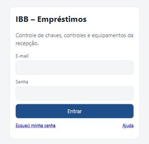
- Abra o endereço recepcaoibb.github.io no navegador.
- Digite o seu e-mail e a sua senha.
- Clique em Entrar (ou aperte Enter).
Esqueci minha senha
- Na tela de entrada, digite o seu e-mail no campo E-mail.
- Clique em Esqueci minha senha.
- Abra o seu e-mail: chegará uma mensagem com um link para criar uma senha nova. Se não aparecer, olhe também a caixa de spam.
Sair e Ajuda
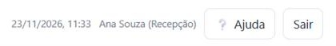
O botão Ajuda abre este manual. O botão Sair encerra o seu acesso.
3Tela inicial
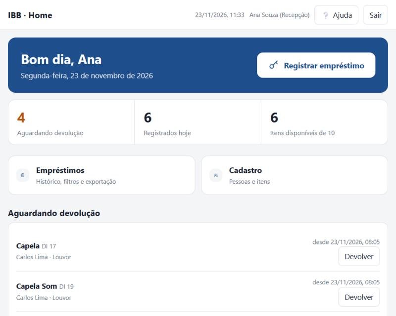
| Parte da tela | Para que serve |
|---|---|
| Registrar empréstimo | Atalho para fazer um novo empréstimo (veja a seção 4). |
| Aguardando devolução | Quantos itens estão fora, ainda não devolvidos. |
| Registrados hoje | Quantos empréstimos foram feitos hoje. |
| Itens disponíveis | Quantos itens estão na recepção, prontos para emprestar. |
| Empréstimos e Cadastro | Abrem o histórico de empréstimos e o cadastro de pessoas e itens. |
| Lista Aguardando devolução | Mostra os itens que estão fora há mais tempo, com o botão Devolver. Quando há mais de 6, aparece o botão Ver todos. |
Para voltar a esta tela de qualquer lugar, clique em Home no alto da página.
4Registrar um empréstimo
Você pode emprestar um ou vários itens para a mesma pessoa de uma vez.
Passo 1 – Escolher os itens
- Clique em Registrar (na tela de Empréstimos) ou em Registrar empréstimo (na tela inicial).
- Digite no campo de busca parte do nome ou do código do item. Exemplo: “juv” encontra Sala Juventude; “c 19” também. Acentos e letras maiúsculas não fazem diferença.
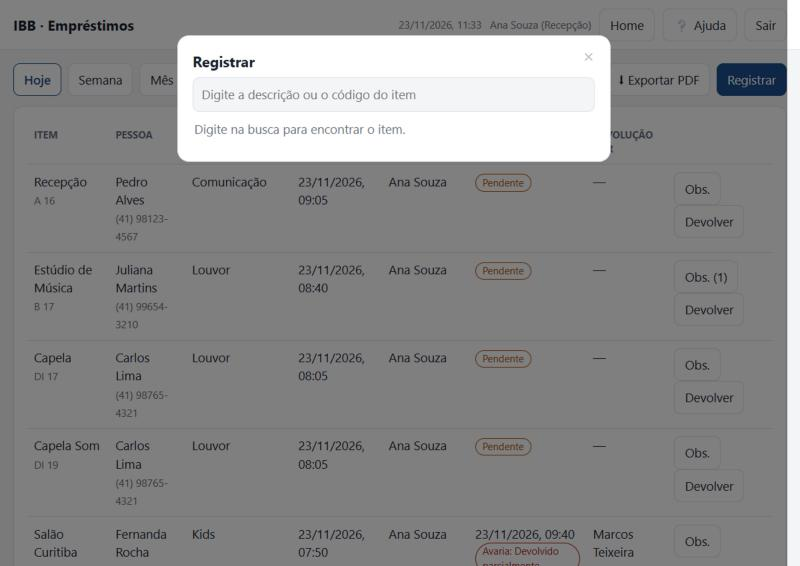
- Clique em ＋ Adicionar no item desejado. A busca é limpa para você procurar o próximo.
- Repita para todos os itens que a pessoa vai levar. Eles aparecem em Itens selecionados. Para tirar um item da lista, clique no ✕ ao lado dele.
- Clique em Continuar com N itens →.
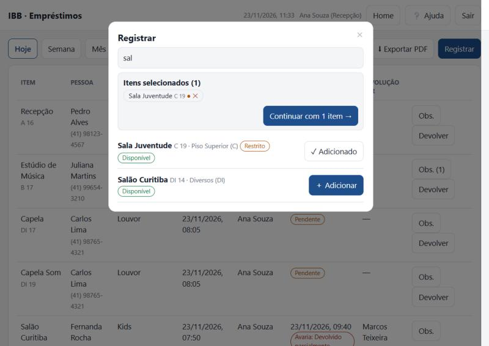
Cada item mostra a situação dele:
- Disponível – pode ser emprestado.
- Emprestado a … – já está com alguém. No lugar de “Adicionar” aparece o botão Devolver.
- Restrito – só pode ser emprestado a pessoas autorizadas (veja a seção 11).
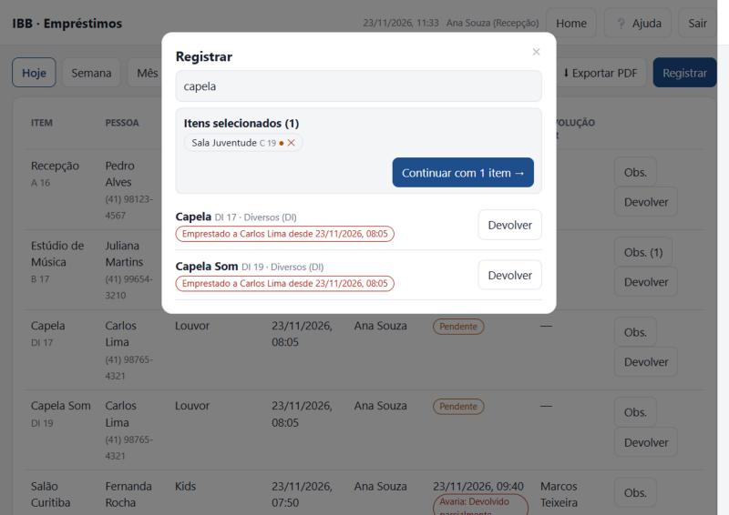
Passo 2 – Escolher a pessoa
- Digite o nome da pessoa no campo Pessoa.
- Clique em Selecionar ao lado do nome certo. A pessoa escolhida aparece num quadro verde com ✔.
- Se quiser, escreva uma Observação (ela vale para todos os itens).
- Clique em Salvar.
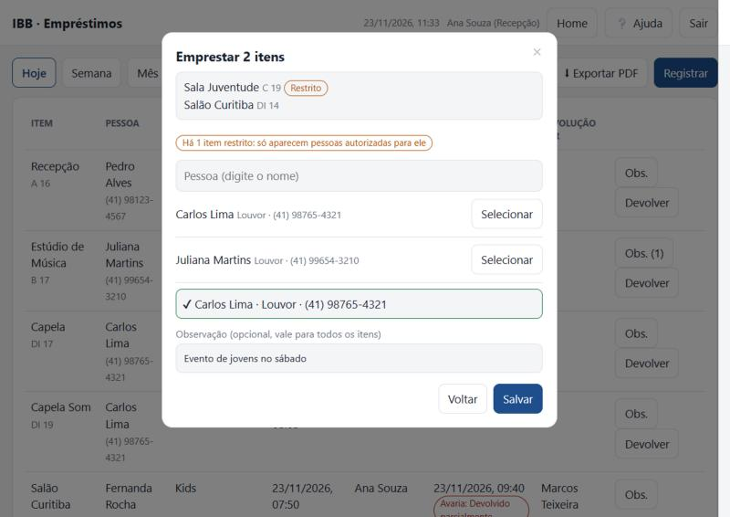
A pessoa ainda não tem cadastro
- Digite o nome e clique em ＋ Cadastrar nova pessoa.
- Preencha Nome, Telefone e Setor/Ministério.
- Clique em Salvar. A pessoa é cadastrada e o empréstimo é registrado ao mesmo tempo.
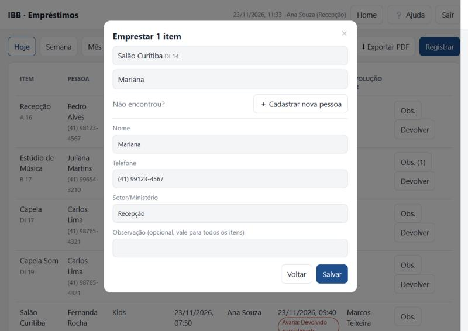
Depois de salvar, cada item vira um registro separado na tela de Empréstimos. Assim, se a pessoa devolver só parte dos itens, você dá baixa apenas nos que voltaram.
5Registrar uma devolução
O botão Devolver aparece em três lugares: na lista Aguardando devolução da tela inicial, na tela de Empréstimos e na busca da janela Registrar.
- Clique em Devolver no item que voltou.
- Confira o item e a pessoa no topo da janela.
- Deixe marcado Devolvido sem problemas.
- Clique em Confirmar devolução.
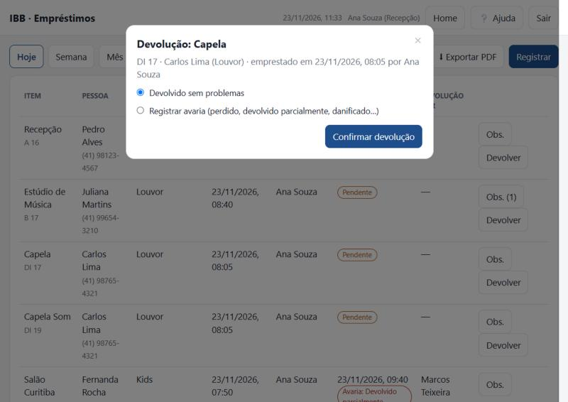
O sistema grava a data, a hora e o seu nome como responsável pela devolução.
6Registrar uma avaria
Use quando o item voltar com problema ou não voltar.
- Clique em Devolver no item.
- Marque Registrar avaria.
- Escolha o Tipo de avaria:
- Item perdido – a pessoa perdeu o item;
- Devolvido parcialmente – voltou só uma parte (ex.: 1 das 2 chaves do molho);
- Danificado – voltou quebrado ou com defeito;
- Outro – qualquer outra situação.
- Descreva o que aconteceu em Descrição da ocorrência (obrigatório).
- Clique em Confirmar devolução.
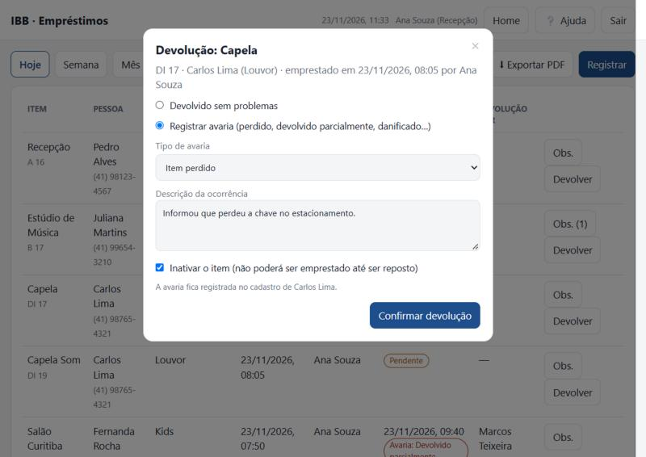
A avaria fica registrada no cadastro da pessoa que estava com o item (veja a seção 10) e aparece no histórico de empréstimos e no PDF.
7Consultar empréstimos
Na tela inicial, clique em Empréstimos.
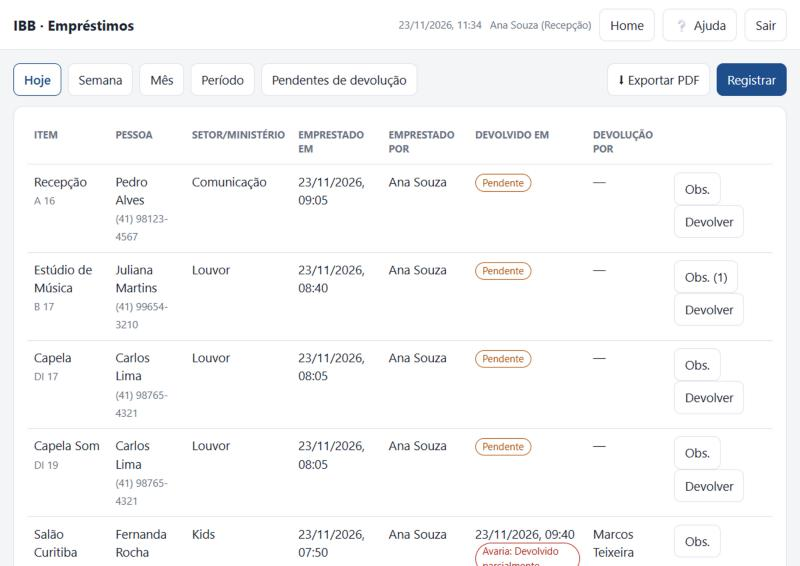
Filtros
| Botão | Mostra |
|---|---|
| Hoje | Empréstimos feitos hoje. |
| Semana | Empréstimos desde segunda-feira desta semana. |
| Mês | Empréstimos deste mês. |
| Período | Empréstimos entre duas datas que você escolhe nos campos De e Até. |
| Pendentes de devolução | Todos os itens que ainda não voltaram, de qualquer data. |
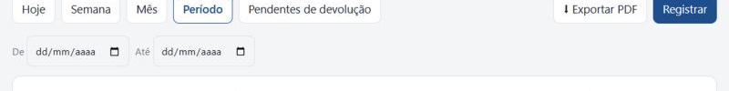
O que cada coluna mostra
- Item e código; Pessoa e telefone; Setor/Ministério.
- Emprestado em e Emprestado por: data, hora e a recepcionista que registrou o empréstimo.
- Devolvido em e Devolução por: data, hora e quem registrou a devolução. Enquanto o item está fora, aparece Pendente.
- Quando houve avaria, ela aparece em vermelho abaixo da data de devolução, com a descrição.
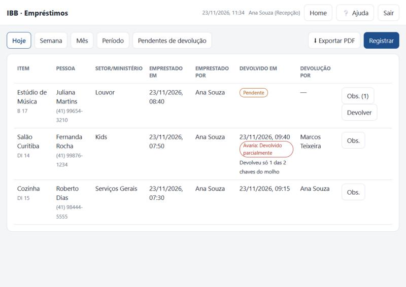
8Observações
Use observações para anotar informações sobre um empréstimo, como “ensaio até 11h” ou “devolveu com a chave do armário junto”.
- Passe o mouse sobre o botão Obs. para ler as observações. O número entre parênteses, como Obs. (1), mostra quantas existem.
- Clique em Obs. para ver todas e acrescentar uma nova: escreva no campo Nova observação e clique em Adicionar.
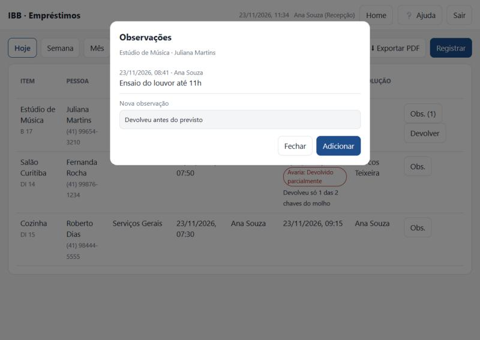
As observações não podem ser apagadas. Se escrever algo errado, acrescente uma nova observação corrigindo.
9Exportar o relatório em PDF
- Na tela de Empréstimos, escolha o filtro desejado (Hoje, Semana, Mês, Período ou Pendentes).
- Clique em ⬇ Exportar PDF.
- O arquivo emprestimos-ibb-AAAA-MM-DD.pdf é baixado. Abra-o para ver ou imprimir.
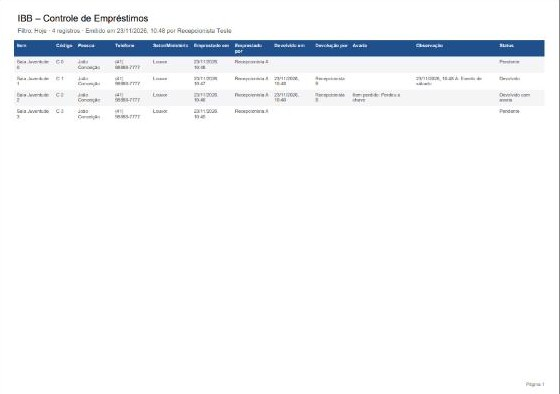
O PDF traz todos os registros do filtro escolhido, com quem emprestou, quem recebeu a devolução, as avarias, as observações e a situação de cada item. Ele é protegido contra edição: dá para abrir e imprimir, mas não alterar.
10Cadastro de pessoas
Na tela inicial, clique em Cadastro e depois no botão Pessoas.
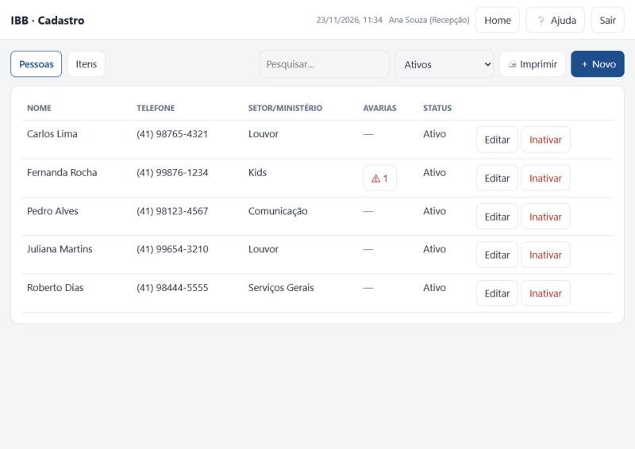
- Pesquisar: digite parte do nome, telefone ou setor no campo Pesquisar….
- Todos os setores: escolha um setor/ministério na lista para ver só as pessoas dele (ex.: “Pastor Auxiliar”). Funciona junto com a pesquisa por nome.
- Ativos / Inativos / Ativos e inativos: escolhe quais pessoas aparecem na lista.
- ＋ Novo cadastra uma pessoa (nome, telefone e setor/ministério são obrigatórios).
- Editar corrige os dados de uma pessoa.
- Inativar tira a pessoa das buscas de empréstimo, sem apagar o histórico. Ativar traz de volta.
- 🖨 Imprimir baixa um arquivo com a lista exibida. Abra o arquivo e a impressão começa sozinha.
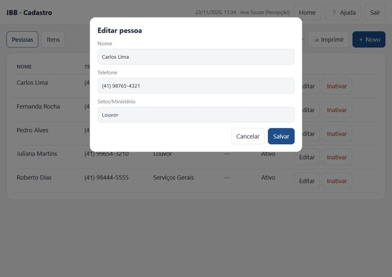
Avarias da pessoa
A coluna Avarias mostra quantas ocorrências a pessoa já teve (ex.: ⚠ 1). Clique no número para ver o histórico: tipo, item, descrição, datas e quem registrou.
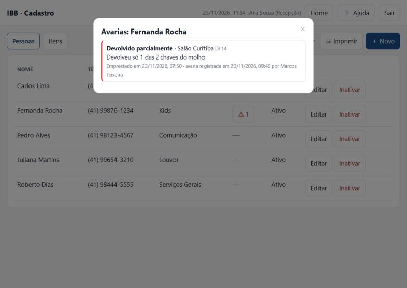
11Cadastro de itens
Em Cadastro, clique no botão Itens.
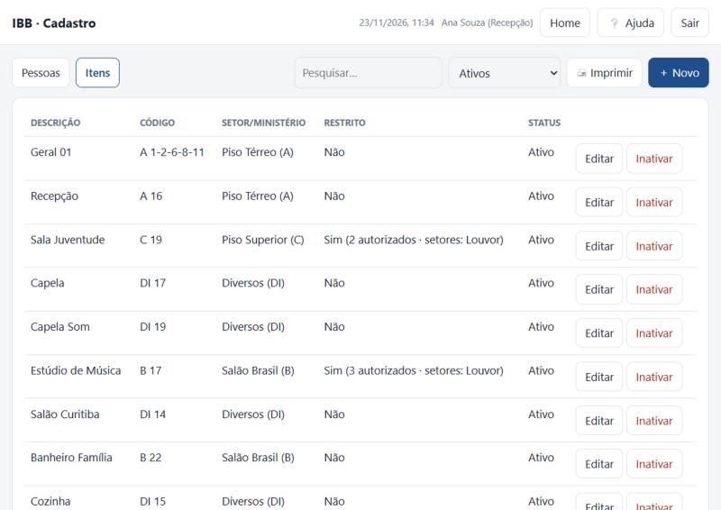
- ＋ Novo cadastra um item: Descrição e Setor/Ministério são obrigatórios; o Código é opcional, mas não pode se repetir.
- Editar altera os dados do item.
- Inativar tira o item da busca de empréstimos (ex.: chave perdida). Não é possível inativar um item que está emprestado: registre a devolução antes. Ativar traz o item de volta.
Itens restritos
Um item restrito só pode ser emprestado a quem tem autorização. Para configurar, clique em Editar no item e marque Restrito. Há duas formas de autorizar:
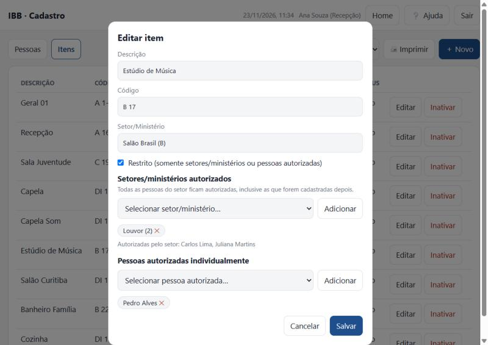
- Por setor/ministério: escolha o setor na lista e clique em Adicionar. Todas as pessoas desse setor ficam autorizadas, inclusive as que forem cadastradas depois. Os nomes autorizados aparecem logo abaixo.
- Por pessoa: para alguém de outro setor, escolha a pessoa em Pessoas autorizadas individualmente e clique em Adicionar.
- Clique em Salvar.
Para retirar uma autorização, clique no ✕ ao lado do setor ou da pessoa e salve.
12Regras importantes (resumo)
| Situação | Regra |
|---|---|
| Telefone | Formato (xx) 9xxxx-xxxx: DDD + celular de 9 dígitos começando com 9. Não aceita dígitos a menos nem os 8 últimos dígitos iguais. |
| Item restrito | Só aparece para pessoas autorizadas, por setor/ministério ou individualmente. |
| Vários itens restritos juntos | A pessoa precisa estar autorizada para todos eles. Se não estiver, faça empréstimos separados. |
| Item já emprestado | Não pode ser emprestado de novo até a devolução ser registrada. |
| Avaria | Tipo e descrição são obrigatórios. Fica no histórico da pessoa. |
| Item inativo | Não aparece na busca de empréstimos. Não é possível inativar um item emprestado. |
| Registros do sistema | Ficam gravados com data, hora e o nome de quem fez. A Recepção não consegue excluir empréstimos. |
13Dúvidas frequentes
Digitei o nome do item e ele não aparece.
Tente só uma parte do nome ou o código (ex.: “capela” ou “DI 17”). Se ainda assim não aparecer, o item pode estar inativo: veja em Cadastro → Itens, escolhendo “Inativos” na lista.
A pessoa não aparece na hora de emprestar um item restrito.
Ela não está autorizada para esse item. Confira o setor/ministério no cadastro dela e as autorizações do item (seção 11).
O sistema não aceita o telefone.
O número precisa ter DDD + 9 dígitos começando com 9, por exemplo (41) 98765-4321. Números fixos e números com dígitos repetidos, como (41) 99999-9999, não são aceitos.
Registrei um empréstimo ou uma devolução errada. Como corrijo?
Adicione uma observação explicando o erro e avise um administrador. Somente o administrador pode excluir registros.
A pessoa devolveu só parte dos itens.
Clique em Devolver apenas nos itens que voltaram. Os outros continuam como pendentes. Se faltar uma parte de um mesmo item (ex.: uma chave de um molho), registre como avaria “Devolvido parcialmente”.
Apareceu a mensagem “Acesso não liberado”.
A sua conta ainda não foi liberada ou foi desativada. Fale com um administrador.
Esqueci a senha.
Use “Esqueci minha senha” na tela de entrada (seção 2). Se não tiver acesso ao e-mail cadastrado, fale com um administrador.
O PDF não foi gerado.
Verifique a conexão com a internet e tente de novo. Se o filtro escolhido não tiver nenhum registro, o sistema avisa e não gera o arquivo.
A tela parece desatualizada ou travou.
Aperte F5 para recarregar a página. Os dados ficam salvos no sistema; nada se perde.